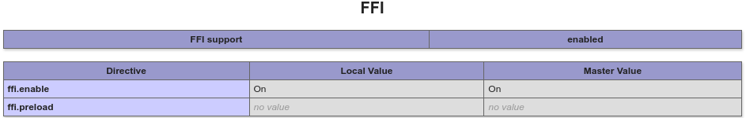
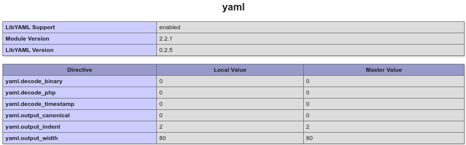
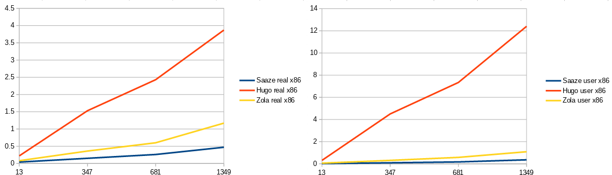
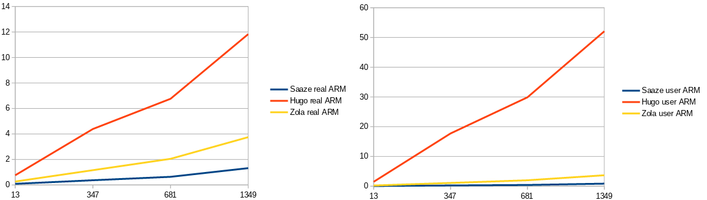

, 27 min read
Ein Static Site Generator in PHP, schneller als Hugo oder Zola
Original post is here eklausmeier.goip.de/blog/2022/02-25-ein-static-site-generator-in-php-schneller-als-hugo-oder-zola.
Dieser Artikel ist gedacht für eine Veröffentlichung im PHP-Magazin, Redaktionsleiter Hartmut Schlosser.
Zusammenfassung: Wir stellen Techniken wie PHP-FFI, PHP-PECL und Profiling mit XHProf vor. Mit diesen Techniken wird ein in PHP geschriebener Static Site Generator performanter, wie die beiden bekannten Generatoren Hugo und Zola, die in Go oder Rust geschrieben wurden.
Kann PHP gegen in Go oder in Rust erstellte CMS antreten und trotzdem performanter sein? Wenn ja, was sind die wesentlichen Elemente für die Performance? Sind diese Elemente auch auf andere PHP-Projekte übertragbar, also Projekte, die gar nichts mit CMS zu tun haben? Wie kann man die performance-kritischen Stellen in einem PHP Programm erkennen? Was kann man mit diesen Ergebnissen dann anstellen? Dieser Artikel beantwortet diese Fragen.
Von Elmar Klausmeier
Was ist ein Static Site Generator?
Bekannte datenbank-gestützte Content Management Systeme (CMS), wie WordPress oder Joomla, erzeugen aus den Daten in einer Datenbank während einer Web-Anfrage mit Hilfe von PHP entsprechenden HTML Code, der an den Nutzer ausgeliefert wird. D.h. pro Request finden Datenbankoperationen statt und es wird PHP Code ausgeführt. Zusätzlich ausgelieferten JavaScript Code lassen wir hierbei noch außer acht. Flat File CMS ersetzen hierbei die Datenbank durch reine Dateioperationen.
Static Site Generatoren gehen hierbei einen grundsätzlich anderen Weg. Anstatt pro Anfrage eines Nutzers die HTML-Seite dynamisch zusammen zu setzen, werden sämtliche HTML-Seiten vorab generiert. Kommt nun eine Anfrage eines Nutzers, so liegt die HTML-Seite bereits komplett fertig vor und muß vom Web-Server nur noch ausgeliefert werden. D.h. auf der Web-Server Seite ist nur ein klassischer Web-Server, wie z.B. nginx oder Apache, nötig, aber keine dynamische Komponenten wie PHP, JSP, ASP u.s.w. Aus Performance- und Sicherheitsgründen ist damit ein Static Site Generator sehr attraktiv.
Kein Licht ohne Schatten. Nachteilig beim Static Site Generator sind, daß zum einen ein separater Deployment-Schritt der generierten Seiten auf den Web-Server notwendig ist und zum anderen, daß die Erzeugung der ganzen statischen HTML-Seiten einmalige Generierzeit benötigt.
Ein Static Site Generator benötigt den eigentlichen Content und ein oder mehrere Templates (Schablonen) aus denen dann die statischen HTML-Seiten erzeugt werden.
Das Template definiert üblicherweise den Kopf und Fuß, sowie die Navigationsleisten der Web-Site. Der Content ist häufig in Markdown /1/ oder reStructuredText /2/ verfaßt, kann aber auch eine eigene spezielle Sprache sein.
In den letzten Jahren sind eine ganze Reihe von Static Site Generatoren entstanden. An Programmiersprachen zur Erstellung von Static Site Generatoren findet man öfters: Go, Rust, Ruby, JavaScript, Python und PHP. Nachfolgende Tabelle enthält eine Auswahl von Static Site Generatoren.
| Generator | Programmiersprache |
|---|---|
| Hugo | Go |
| Zola | Rust |
| Eleventy | JavaScript |
| GitBook | JavaScript |
| Pelican | Python |
| Jekyll | Ruby |
| Grav | PHP |
| Saaze | PHP |
| Nift | C++ |
Auf Site Generators /3/ findet man mehr als 300 Static Site Generatoren. Und diese genannte Liste ist nicht vollständig.
Man würde annehmen, daß die Generierzeit zur Erzeugung aller statischen Seiten bei einem Static Site Generator geringer ist, wenn eine compilierte Sprache, wie Go oder Rust, benutzt wird. Wir werden im weiteren sehen, daß die geschickte Kombination von PHP-FFI und PHP-PECL den bekannten compilierten Sprachen nicht nur Paroli bieten können, sondern sie sogar schlagen können.
Warum Ablösung von WordPress durch einen Static Site Generator?
Der Autor hat über knapp zehn Jahre in WordPress einen kleinen Blog über Computer geführt. Von solchen Computer-Blogs gibt es Tausende. Ähnlich wie Reise-Blogs, Koch-Blogs, SEO-Blogs u.s.w. Wenn man über diese zehn Jahre so ca. 300 Artikel gesammelt hat, dann möchte man, daß diese Seiten auch bestehen bleiben und nicht durch Änderungen auf Seiten von WordPress auf einmal "kaputt" gehen, also man den Inhalt eines oder mehrerer Artikel nochmal erfassen muß. Mit der Einführung des sogenannten Gutenberg-Editors in WordPress geschah aber nun genau das. Bestehender Content wurde, wenn man ihn anfaßte, völlig zerstört. Auch das Einfügen von mathematischen Formeln ist in WordPress etwas umständlich. Ferner kann WordPress nur i.w. ein einziges Blog führen, nicht mehrere parallel unter einer URL. Das war der Punkt, wo Ersatz her mußte. Im Vorfeld hatte ich mich öfters mit Hugo beschäftigt und sogar dafür einen Converter /4/ in Go geschrieben, der WordPress Daten in Hugo-Dateien umwandeln kann. Im Rahmen dieser Converter-Erstellung hatte ich aber bemerkt, daß die Entwickler von Hugo etwas reserviert bis abweisend /5/ auf Änderungswünsche reagierten.
Ich suchte nun einen Static Site Generator, der einfach zu bedienen ist, denn ich wollte nun zügig von WordPress umsteigen. Ich wollte ja bloggen und mich nicht mit Static Site Generatoren als solchem auseinander setzen. Ich schaute mir Stati, Pico und schließlich Saaze an.
Saaze Static Site Generator
Saaze /6/ wurden durch den schottischen Designer und Entwickler Gilbert Pellegrom /7/ erstellt. Dieser hatte bereits diverse andere CMS implementiert, wie PicoCMS, Baun, Handle und Circulate. Leider wird keines der von ihm entwickelten CMS von ihm selber weiter entwickelt. Zum Thema Abandonware komme ich nachher nochmal.
Saaze besticht durch folgende Eigenschaften:
- Einfach in der Benutzung und Installation
- Einfach zu hosten -- das ist bei statischen Seiten generell kein großes Problem
- Saaze kann sowohl als Static Site Generator benutzt werden, aber auch dynamisch Content erzeugen, d.h. wie ein klassisches Flat File CMS arbeiten
- Leichte Erweiterbarkeit
Die leichte Erweiterbarkeit von Saaze war wichtig, weil ich mathematische Formeln, YouTube Videos oder Twitter Tweets einfach einbetten wollte. Von Haus aus bot Saaze das nicht, aber es war unkompliziert diese Funktionalität zu ergänzen. Die Reise startete also mit Saaze.
Der Content von Saaze wird in Markdown vorgehalten. Jede Markdown Datei enthält im Kopf sogenannten Frontmatter in Yaml. Das sind Informationen zu Titel, Datum, Entwurf ("Draft"), ggf. verwendete Bibliotheken u.s.w. Eine solche Markdown-Datei mit Frontmatter sieht beispielsweise wie folgt aus:
---
date: "2021-05-18 13:00:00"
title: "Moved Blog To eklausmeier.goip.de"
draft: false
categories: ["WordPress"]
tags: ["Saaze", "PHP", "Go"]
author: "Elmar Klausmeier"
---
The blog [eklausmeier.wordpress.com](https://eklausmeier.wordpress.com) is no longer maintained. I moved to [eklausmeier.goip.de](https://eklausmeier.goip.de), i.e., this one. During migration I corrected a couple of minor typos and dead links.
...
Saaze verwendet Blade als Template Engine.
Wie oben bereits erwähnt, so gibt es zwei Nachteile von Static Site Generatoren: Deployment und Generierzeit. Bei mir ist das Deployment ein kurzes Shell-Script, welches letztlich nur Directories umbenennt. Das ist bei einem kleinen privaten Blog keine große Sache. Die Generierzeit ist allerdings ein Thema, wenn man schnell nochmal alles neu generieren muß, weil man feststellt, daß man doch noch was ändern will. Sei nun die Änderung am Template oder am Content ist egal -- es muß neu generiert werden.
Saaze schneller machen
Mir war bei der Installation von Saaze mit Hilfe von Composer aufgefallen, daß Saaze eine Reihe von störenden Abhängigkeiten zu anderen PHP Bibliotheken hat. Störend deswegen, weil die Installation von Saaze mit PHP8 ohne Klimmzüge nicht vonstatten ging. Vielmehr mußte Composer über PHP7 aufgerufen werden, damit alle Abhängigkeiten befriedigt werden konnten. Zuerst habe ich das dem Umstand zugeschrieben, daß PHP8 noch neu ist. Wenn nun alle Abhängigkeiten installiert sind, dann kann man Saaze auch mit PHP8 aufrufen. Wenn man sich die Abhängigkeit dann im Source Code von Saaze anschaut, dann sieht man allerdings, daß diese Abhängigkeiten eigentlich nur Trivialitäten erledigen. Ich notierte mir als Merkposten, daß ich dort mal aufräumen sollte, wenn mal Zeit wäre. Später stellte sich heraus, daß diese Abhängigkeiten ein Grund für die vergleichsweise langen Generierzeiten sind. Dazu aber später mehr.
Der Weg war aber nun vorgezeichnet:
- Einsatz von FFI, um die Konvertierung von Markdown zu HTML zu beschleunigen
- Profiling der Anwendung, um Schwachstellen zu erkennen
- Reduktion der Abhängigkeiten
Der Fahrplan ist nun:
Man erkennt, daß FFI schon vor dem eigentlichen Profiling verwendet wurde. Es ist bei einem Markdown-basierten Static Site Generator offenkundig, daß die Umwandlung von Markdown zu HTML einen wesentlichen Einfluß auf die Laufzeit hat. Wenn man von seiner Anwendung keine offenkundigen Performance-kritischen Stellen vorab kennt, muß man natürlich mit Profiling anfangen.
Simplified Saaze
Die beschleunigte Version von Saaze nenne ich im weiteren "Simplified Saaze" /8/. Der Name kommt daher, daß der Code für Simplified Saaze kleiner ist als für Saaze. Trotz des geringeren Codeumfangs bietet Simplified jedoch folgende Funktionen, die Saaze nicht anbietet:
- Mathematische Formeln mit MathJax /9/
- Einbettung von Twitter, sowie YouTube, Vimeo und WordPress Videos
- Einbettung von Mermaid /10/
- Einbettung von CodePen /11/
- Entwurfsmodus
- Einzelgenerierung von Markdown Dateien
- Native PHP als Template Engine
FFI
Seit PHP 7.4 bietet PHP die Möglichkeit sehr einfach C Routinen von PHP aus aufzurufen. Die Betonung liegt hier auf der Einfachheit. FFI steht für Foreign Function Interface. FFI wurde von Dmity Stogov /12/ der Firma Zend implementiert. Es orientiert sich an LuaJIT /13/ FFI von Michael Pall /14/. PHP ist in C geschrieben und PHP um C Funktionen zu erweitern war nie wirklich schwierig, jedoch etwas mühsam, weil man den kompletten PHP Source Code zuerst runterladen und übersetzen muß, um dann für diese Version die richtige Erweiterung zu implementieren. FFI umgeht dies. Es reicht vollkommen aus, wenn man mit Hilfe von FFF::cdef die Signatur der C Routine angibt, d.h. Name der Routine plus Return-Type und Argument-Typen. Zusätzlich gibt man den Ort der shared library an, wo sich diese Routine befindet. Hat man das gemacht, so kann man diese C Routine direkt mittels FFI::string() aufrufen, wenn beispielsweise die C-Routine einen char * zurück liefert. Wenn der Return-Type der C-Routine nur int oder double ist, dann kann der Aufruf sogar direkt erfolgen, siehe nachfolgendes Beispiel:
$ffj0 = FFI::cdef("double j0(double);", "libm.so.6");
printf("j0(2) = %f<br>\n", $ffj0->j0(2));
Einfacher kann der Aufruf von C Routinen nicht mehr werden.
Damit man FFI in PHP benutzen kann, muß man in der php.ini folgendes setzen:
extension=ffi
ffi.enable=true
Diese Schalterstellung prüft man am besten mit phpinfo(). Das sollte dann wie folgt aussehen:

Mit der leichten Aufrufbarkeit von C hat man damit natürlich auch C++, Julia und Go.
Die PHP Dokumentation /15/ schreibt zu FFI:
Currently, accessing FFI data structures is significantly (about 2 times) slower than accessing native PHP arrays and objects. Therefore, it makes no sense to use the FFI extension for speed; however, it may make sense to use it to reduce memory consumption.
Dies ist m.E. irreführend, weil einer der Gründe für den Aufruf von C Routinen ist selbstverständlich Geschwindigkeit. In unserem Falle werden wir sehen, daß der Aufruf von MD4C zu einer Halbierung der Laufzeit von Saaze führt. Merken sollte man sich allerdings, daß die Geschwindigkeit nicht ganz dieselbe ist wie bei einer PHP Extension, weil die Verkapselung der PHP Daten für die Weiterverarbeitung in C etwas Zeit kostet.
Seine C Routine compiliert man wie folgt:
cc -fPIC -Wall -O2 -shared ...
Grund für die Kommandozeilenoptionen -fPIC und -shared: Die C Routine soll in einer shared library liegen.
Es soll nicht verschwiegen werden, daß derzeit FFI einen Nachteil gegenüber in PHP implementierten Routinen hat: Die Integration in Composer ist noch nicht direkt vorhanden. D.h. wenn die eigene Software C Routinen via FFI einbettet, dann ist diese C Routine bei der Installation via Composer in gewisser Hinsicht ein Fremdkörper, der separate Installationsschritte bedarf. Wie man oben sieht ist es nicht schwierig oder kompliziert, aber halt nicht direkt in Composer integriert.
FFI im Vergleich zu PHP Extensions
Einer der wesentlichen Vorteile von FFI ist die sehr einfache Aufrufbarkeit von C Routinen aus PHP heraus. Nachfolgend kurz die Darstellung, wie man eine PHP Extension erstellt.
- Man lädt sich den Source Code von PHP herunter.
- Man lädt sich die Abhängigkeiten herunter, die benötigt werden. In meinem Falle von Arch Linux war dies
pacman -S tidy freetds. - Man rekonstruiert die configure Parameter:
php -i | grep "Configure Command". Die Ausgabe ist ein mehrzeilger Befehl fürconfigure. - Man ruft
make.
Eine einfache Extension sieht dann bspw. so aus:
/* {{{ void test1() */
PHP_FUNCTION(test1)
{
ZEND_PARSE_PARAMETERS_NONE();
php_printf("test1(): The extension %s is loaded and working!\r\n", "callcob");
cob_init(0,NULL);
}
/* }}} */
Man sieht, daß das ganze wesentlich zäher ist als der FFI Aufruf. Ein weiterer Nachteil ist, daß bei einer neuen PHP Version, bspw. ein Wechsel von PHP 8.0 auf 8.1, man diese Prozedur wiederholen muß.
Eine gute Einführung in die Programmierung von PHP Extensions findet man in Golemon /16/ und in Zend /17/.
Aufruf von MD4C via FFI
Zurück zu Saaze und der Verkürzung der Generierzeit. Einer der wesentlichen Aufgaben eines Static Site Generators ist die Umwandlung von Markdown in HTML. Wie oben beschrieben, manche Static Site Generatoren akzeptieren und fordern andere Eingabeformat als Markdown, wie z.B. reStructuredText. Saaze benötigt Markdown. Die Umwandlung von Markdown zu HTML geschieht in Saaze mittels Parsedown Extra /18/, welches i.w. von Emanuil Rusev /19/ programmiert wurde. Ersetzt man Parsedown Exrtra durch MD4C /20/ zeigt sich, daß man die Umwandlungszeit von Markdown zu HTML um den Faktor acht senken kann. In der Summe kommt man auf Reduktion der Laufzeit um fast die Hälfte.
MD4C ist eine in C geschriebene Routine für die Umwandlung von Markdown zu HTML. Programmiert wurde sie von Martin Mitas /21/. Um sich einen groben Überblick zu verschaffen, um wieviel schneller MD4C gegenüber anderen Implementierung ist, nachfolgend zwei Tabellen. Man siehe Why is MD4C so fast? /22/:
| Test name | Simple input | MD4C (seconds) | Cmark (seconds) |
|---|---|---|---|
| cmark-benchinput.md | (benchmark from CMark) | 0.3650 | 0.7060 |
| long-block-multiline.md | "foo\n" * 1000000 | 0.0400 | 0.2300 |
| long-block-oneline.md | "foo " * 10 * 1000000 | 0.0700 | 0.1000 |
| many-atx-headers.md | "###### foo\n" * 1000000 | 0.0900 | 0.4670 |
| many-blanks.md | "\n" * 10 * 1000000 | 0.0700 | 0.3110 |
| many-emphasis.md | "foo " * 1000000 | 0.1100 | 0.8460 |
| many-fenced-code-blocks.md | "~~~\nfoo\n~~~\n\n" * 1000000 | 0.1600 | 0.4010 |
| many-links.md | "a " * 1000000 | 0.2100 | 0.5110 |
| many-paragraphs.md | "foo\n\n" * 1000000 | 0.0900 | 0.4860 |
Ein weiterer Geschwindigkeitsvergleich /23/ zwischen cmark, md4c und commonmark.js:
| Implementation | Time (sec) |
|---|---|
| commonmark.js | 0.59 |
| cmark | 0.12 |
| md4c | 0.04 |
MD4C wurde speziell im Hinblick auf Performance und geringen Speicherverbrauch hin entwickelt.
Während Parsedown direkt in PHP implementiert ist und sich damit mittels Composer einfach als Abhängigkeit hinzufügen läßt, so ist bisher kein MD4C Paket in PHP bekannt. Hier hilft nun FFI. Es ist eben sehr einfach MD4C, welches in C geschrieben ist, in PHP via FFI aufzurufen.
Der Aufruf von MD4C aus PHP heraus sieht nun wie folgt aus:
<?php
$ffi = FFI::cdef("char *md4c_toHtml(const char*);","/srv/http/php_md4c_toHtml.so");
printf("argv1 = %s\n", $argv[1]);
$markdown = file_get_contents($argv[1]);
$html = FFI::string( $ffi->md4c_toHtml($markdown) );
printf("%s", $html);
Die eigentliche C Routine md4c_toHtml() für den MD4C Aufruf ist:
/* Provide md4c to PHP via FFI
Copied many portions from Martin Mitas:
https://github.com/mity/md4c/blob/master/md2html/md2html.c
Compile like this:
cc -fPIC -Wall -O2 -shared php_md4c_toHtml.c -o php_md4c_toHtml.so -lmd4c-html
This routine is not thread-safe. For threading we either need a thread-id passed
or using a mutex to guard the static/global mbuf.
*/
#include <stdio.h>
#include <stdlib.h>
#include <string.h>
#include <md4c-html.h>
struct membuffer {
char* data;
size_t asize;
size_t size;
};
static void membuf_init(struct membuffer* buf, MD_SIZE new_asize) {
buf->size = 0;
buf->asize = new_asize;
if ((buf->data = malloc(buf->asize)) == NULL) {
fprintf(stderr, "membuf_init: malloc() failed.\n");
exit(1);
}
}
static void membuf_grow(struct membuffer* buf, size_t new_asize) {
buf->data = realloc(buf->data, new_asize);
if(buf->data == NULL) {
fprintf(stderr, "membuf_grow: realloc() failed.\n");
exit(1);
}
buf->asize = new_asize;
}
static void membuf_append(struct membuffer* buf, const char* data, MD_SIZE size) {
if(buf->asize < buf->size + size)
membuf_grow(buf, buf->size + buf->size / 2 + size);
memcpy(buf->data + buf->size, data, size);
buf->size += size;
}
static void process_output(const MD_CHAR* text, MD_SIZE size, void* userdata) {
membuf_append((struct membuffer*) userdata, text, size);
}
static struct membuffer mbuf = { NULL, 0, 0 };
char *md4c_toHtml(const char *markdown) { // return HTML string
int ret;
if (mbuf.asize == 0) membuf_init(&mbuf,16777216);
mbuf.size = 0; // prepare for next call
ret = md_html(markdown,strlen(markdown),process_output,&mbuf,MD_DIALECT_GITHUB,0);
membuf_append(&mbuf,"\0",1); // make it a null-terminated C string, so PHP can deduce length
if (ret < 0) return "<br>- - - Error in Markdown - - -<br>\n";
return mbuf.data;
}
Obiger Code wird in Simplified Saaze verwendet. Obiger Code ließe sich aber auch in Grav, PicoCMS, Sculpin, Stati oder Statamic einfach verwenden.
Profiling mit XHProf
Profiling ist das Messen, wie lange Funktionsaufrufe dauern und wie häufig Funktionen aufgerufen werden. Ein sehr leistungsstarkes Werkzeug für PHP ist hierbei XHProf /24/. Dieser "Hierarchical Profiler" genannte Profiler wurde ursprünglich von Facebook entwickelt. Vor der Benutzung der auf PHP basierten Programmiersprache Hack /25/ hat Facebook intensiv PHP benutzt.
Die Installation von XHProf nach Download ist wie folgt:
cd extensionphpizeconfiguremake- Kopiere so Datei in das PHP Library Directory, unter Arch Linux ist dies
/usr/lib/php/modules/ - Passe
php.inian - Kopiere JavaScript Libraries, z.B. nach
/usr/share/webapps/xhprof/
Um nun die Messung zu starten muß XHProf explizit aufgerufen werden:
xhprof_enable(XHPROF_FLAGS_CPU + XHPROF_FLAGS_MEMORY);
Um die Messung zu stoppen:
stopXhprof();
Obige Hilfsfunktion ist wie folgt definiert:
function stopXhprof() {
$xhprof_data = xhprof_disable();
//
// Saving the XHProf run
// using the default implementation of iXHProfRuns.
//
include_once "/usr/share/webapps/xhprof/xhprof_lib/utils/xhprof_lib.php";
include_once "/usr/share/webapps/xhprof/xhprof_lib/utils/xhprof_runs.php";
$xhprof_runs = new \XHProfRuns_Default();
// Save the run under a namespace "xhprof_foo".
//
// **NOTE**:
// By default save_run() will automatically generate a unique
// run id for you. [You can override that behavior by passing
// a run id (optional arg) to the save_run() method instead.]
//
$run_id = $xhprof_runs->save_run($xhprof_data, "saaze");
echo "---------------\n".
"Assuming you have set up the http based UI for \n".
"XHProf at some address, you can view run at \n".
"http://<xhprof-ui-address>/index.php?run=$run_id&source=saaze\n".
"---------------\n";
}
Man beachte, daß durch die Messung via XHProf die Ablaufgeschwindigkeit insgesamt langsamer wird. Im Falle von Saaze wird die Ausführungsgeschwindigkeit dreimal langsamer bei Simplified Saaze und bis zu siebenmal langsamer bei Saaze.
Die Ausgabe von XHProf ist eine Web-Seite mit einer großen Tabelle. Jede Zeile der Tabelle enthält für jede PHP Funktion die Anzahl der Aufrufe und die verbrauchte CPU-Zeit. Man kann dann per drill-down in die PHP Funktion reinklicken und sieht dann, was diese Funktion wiederum aufgerufen hat, d.h. wie sich der CPU-Verbrauch dieser PHP Funktion zusammensetzt. Die Tabelle kann man auch nach unterschiedlichen Spalten sortieren lassen.
In unserem Fall stellt man nun fest, daß Saaze von vier Plagen befallen ist:
- Parsedown-Extra -- das war zu erwarten und das hatten wir bereits ausgemerzt
- Blade Template Verarbeitung
- Yaml-Parser
- Doppel und Dreifachberechnungen von bereits berechneten Werten
Die beiden Problemfälle 2 und 3 wurden nun im Rahmen der Reduktion der Abhängigkeiten bereinigt. Die exorbitant hohe Anzahl von Funktionsaufrufen für Parsedown sind in Saaze einfach ein Fehler, weil Dinge, die schon vormals berechnet wurden, immer wieder neu berechnet werden. Dieser Bug in Saaze ist aber Saaze spezifisch und ließ sich durch eine PHP Referenz lösen. Für das Thema Performane Tuning ist lediglich wichtig, daß der Profiler das geeigneteMittel ist, um überhaupt zu erkennen, daß man ein Problem mit der Anzahl der Aufrufe hat.
Reduktion von Abhängigkeiten
Schon bei der Installation von Saaze war aufgefallen, daß Saaze Abhängigkeiten hat, die empfindlich auf Versionsänderungen reagieren. Diesen und anderen Abhängigkeiten galt es nun zu Leibe zu rücken. Insbesondere da mit XHProf augenscheinlich wurde, daß der Yaml-Parser und die Blade Template Engine prozentual viel Rechenzeit verbrauchen.
Was ist nun schlimm mit Abhängigkeiten? Nun, wenn eine Abhängigkeit für eine konkrete Problemlösung benutzt wird, dann ist dagegen nichts grundsätzlich zu sagen. In unserem Beispiel wurde eine Abhängigkeit zu jenssegers\blade hergestellt. Will man Blade Templates, dann muß man das entweder selber programmieren, oder man findet etwas bereits vorhandenes. Nachteilig ist nun, daß eine Abhängigkeit wiederum weitere Abhängigkeiten einschleppen kann. Hier gilt nun die Regel, je mehr Code man importiert, desto höher ist auch die Wahrscheinlichkeit, daß man damit Fehler und Malware importiert.
Ein bekanntes Beispiel, wo diese Abhängigkeitskaskade so richtig schief gegangen ist, war als in den beiden JavaScript Bibliotheken coa und rc in npm absichtlich platzierte Malware gefunden wurde, siehe Malware found in coa and rc /26/. Diese beiden Pakete hatten wöchentliche Downloadzahlen von 23 Millionen. Es gibt nun sogar Geldprämien /27/, wenn man Trivial-npm's eliminiert. Obwohl dieses abschreckende Beispiel für npm galt, so gilt ähnliches für PHP.
Oben hatte ich bereits erwähnt, daß zahlreiche Open Source Projekte angelegt werden, aber nach kurzer Zeit das Interesse daran vom Originalautor erlahmt. Der Originalautor wendet sich ab und die Software wird nicht weiterentwickelt, evtl. Fehler werden nicht behoben, auf Fragen von Anwendern wird nicht reagiert. Das nennt man dann Abandonware. Im Falle von Abhängigkeiten muß man nun damit rechnen, daß entweder die Abhängigkeit selber, oder in der Kette der Abhängigkeiten eine solche tote Stelle auftritt. Fehler in dieser Totstelle können dann zu Problemen in allen abhängigen Modulen führen. In Saaze war übrigens eine Software von Spatie so ein Problemfall: Die Aufteilung einer Datei in Frontmatter und Markdown war fehlerhaft. Fehlermeldungen dazu blieben aber unberücksichtigt. Hier muß man dann die Abhängigkeit komplett entfernen und eigenen, korrekten Code einfügen. Abandonware ist keine Eigenheit, die man daran festmachen kann, ob jemand etwas als Hobby oder beruflich erstellt hat. Es gibt zahlreiche Firmen, die Software als Open Source bereitstellen, sie aber nicht weiter pflegen, sondern "vergammeln" lassen. In Deutschland hat dies sogar den Gesetzgeber auf den Plan gerufen, weil ungewartete Software auch ein Sicherheitsrisiko darstellen kann.
Zurück zu Blade Templates: Benötigt ein auf PHP basierender Static Site Generator ein separates Template-Verfahren, oder ist PHP nicht selber schon eine Template-Sprache? Man kann hierzu geteilter Meinung sein, klar ist jedoch, daß PHP alle Anforderungn grundsätzlich abdeckt. D.h. der Verzicht auf Blade führt zu keinen funktionalen Einschränkungen. In unserem Fall von Saaze führt dies zu einer Vervielfachung der Performance, d.h. die Steigerung der Performance nicht um Prozentpunkte, sondern um Faktoren.
Anderes Beispiel für Abhängigkeiten: Was ist einfacher zu codieren und was ist einfacher zu verstehen?
protected function loadMkdwnRecursive(string $dir) : void { // recursively load Markdown files: *.md
foreach (scandir($dir) as $fn) {
if ($fn === '.' || $fn === '..') continue;
$fn = $dir . DIRECTORY_SEPARATOR . $fn;
if (is_dir($fn)) $this->loadMkdwnRecursive($fn);
else if (substr($fn,-3) === '.md') $this->loadEntry($fn);
}
}
Alternativ mit einer Abhängigkeit zu Symfony:
use Symfony\Component\Finder\Finder;
...
$paths = (new Finder())->in($collectionDir)->files()->name('*.md');
foreach ($paths as $file) {
$this->loadEntry($file->getPathname());
}
Bei der Variante, die nur PHP Bordmittel einsetzt, ist genau klar, was die Routine tut. Bei der Symfony Variante sollte man sich zuvor unterrichten, welche Funktionalität die Finder Klasse /28/ bereitstellt. Von der Performance sollte es keine Unterschiede geben. Bei Simplified Saaze wurde die abhängigkeitsfreie Variante gewählt.
Wenn PHP bereits Yaml-Parsing bereitstellt, so liegt es nahe dies auch direkt zu verwenden, anstatt Symfony\Component\Yaml\Yaml. Durch die Verwendung der PECL Yaml Bibliothek ließ sich die Laufzeit um 40% reduzieren. Der Aufruf ohne Symfony:
yaml_parse(...);
Mit Symfony:
Yaml::parse(...);
D.h. die Vermeidung dieser Abhängigkeit ist simpel.
Die Installation der PECL Yaml Bibliothek ist wie folgt:
- Download des aktuellen yaml Pakets von PECL /29/
tar zxf yaml...- Aufruf
phpize - Aufruf
./configure - Aufruf
make. Shared Library ist hiermodules/yaml.so. - Aufruf
make test. Damit werden 74 Tests durchgeführt, welche alle erfolgreich sind. - Als User root kopiert man
modules/yaml.sonach/usr/lib/php/modulesin Arch Linux - Änderung
/etc/php/php.iniund hinzufügenextension=yaml
Nun sollte man einen yaml Eintrag sehen, wenn man phpinfo() aufruft oder php -m oder php -i.

Wie bereits erwähnt, so ist ein Nachteil der PECL Pakete, daß man bei einer neuen PHP Version das obige Verfahren wiederholen muß, sofern die PHP Version nicht ohnehin mit den gewünschten PECL Paketen bereits bestückt ist.
Es gab eine Reihe von Abhängigkeiten, die in Saaze ausgebaut wurden. Dies hatte aber weniger etwas mit Performance Optimierung zu tun. Beispielsweise wurde ein Dependency Injection Framework ausgebaut. Bei einer Code Größe von ca. 1 kLine scheint DI etwas überdimensioniert.
Ist PHP eigentlich schnell genug?
Wenn man kurz innehält, kann man fragen, ob die Programmiersprache PHP überhaupt geeignet ist, wenn es um das Thema Geschwindigkeit geht. Bekannt ist, daß beim Umstieg von PHP5 auf PHP7 erhebliche Geschwindigkeitsvorteile zutage traten. Oder anders formuliert, PHP5 war niemals schnell.
Nachfolgende Tabelle enthält die Laufzeiten auf drei verschiedenen Maschinen, NUC (Intel), Ryzen (AMD) und Odroid (ARM). Es wird das sogenannte n-Damen Problem nicht-rekursiv gelöst. Also, wie positioniert man n Damen auf einem Schachbrett, sodaß sich keine der Damen schlagen können. In untenstehender Tabelle wird das n-Damen Problem für eins bis zwölf gelöst. Bei mehr als zwölf fangen Python und Perl an zu schwächeln und es dauert arg lange.
| Sprache | NUC | Ryzen | Odroid |
|---|---|---|---|
| C | 0.17 | 0.15 | 0.44 |
| Java 1.8.0 | 0.31 | 0.22 | 108.17 |
| node.js 16.4 | 0.34 | 0.21 | 1.67 |
| LuaJIT | 0.49 | 0.33 | 2.06 |
| PyPy3 7.3.5 | 1.57 | 0.86 | n/a |
| PHP 8 | 3.23 | 2.35 | 42.38 |
| Python 3.9.6 | 12.29 | 7.65 | 168.17 |
| Perl 5.34 | 25.87 | 21.14 | 209.47 |
Erkenntnisse:
- C ist bei weitem am schnellsten, bis zu einem Faktor von zwei auf Intel zu seinen beiden nächsten Konkurrenten: Java and Javascript. Auf einem Ryzen ist die Differenz nicht so ausgeprägt.
- Javascript und Java sind fast gleich von der Geschwindigkeit her -- das hätte man wohl so nicht erwartet.
- Javas Performance auf ARM ist fürchterlich, sogar schlechter als Javascript, LuaJIT, und PHP zusammengenommen. Das bedeutet, daß aller Voraussicht nach Java auf Apple's M1 oder Amazon Graviton nicht performant laufen wird.
- Michael Palls /14/ LuaJIT ist ein starker Konkurrent zu allen anderen Sprachen.
- PyPy ist mehr als siebenmal schneller als Python.
- PHP 8 ist deutlich schneller als Python, aber fast zehnmal langsamer als Javascript. Dies ist in Übereinstimmung mit den Ergebnisse von Viktor Korol /30/ und mit den Messungen von Ivan Zahariev /31/.
- Während C ungefähr zweieinhalb-mal langsamer auf ARM als auf Intel ist, so sind die anderen Sprachen überproportional langsamer, also Faktor 5, 6, 7, 8-mal langsamer. Java ist hier mit dem Faktor von nahe 500 ein krasser Ausreißer.
Das PHP Programm für das n-Damen Problem ist:
<?php
/* Check if k-th queen is attacked by any other prior queen.
Return nonzero if configuration is OK, zero otherwise.
*/
function configOkay (int $k, &$a) {
$z = $a[$k];
for ($j=1; $j<$k; ++$j) {
$l = $z - $a[$j];
if ($l == 0 || abs($l) == $k - $j) return 0;
}
return 1;
}
function solve (int $N, &$a) { // return number of positions
$cnt = 0;
$k = $a[1] = 1;
$N2 = $N; //(N + 1) / 2;
loop:
if (configOkay($k,$a)) {
if ($k < $N) { $a[++$k] = 1; goto loop; }
else ++$cnt;
}
do
if ($a[$k] < $N) { $a[$k] += 1; goto loop; }
while (--$k > 1);
$a[1] += 1;
if ($a[1] > $N2) return $cnt;
$k = 2 ; $a[2] = 1;
goto loop;
}
Puristen mögen sich an den goto's stören. Endanwender, die zügig Ergebnisse wollen, freuen sich, wenn sie www nicht mit weltweitem Warten verbinden.
Die weiteren Programme zu diesen Messungen findet man unter Performance Comparison C vs. other /32/.
Performance Vergleich mit Hugo und Zola
Nach den Performance Optimierungen war es nun interessant zu erfahren wie sich Simplified Saaze zu den Platzhirschen verhielt. Hugo ist nach Eigenbeschreibung der schnellste Static Site Generator. Ein jüngerer Herausforderer ist Zola, früher unter dem Namen Gutenberg bekannt.
Man findet zwar Vergleiche zwischen Hugo und Eleventy und anderen JavaScript basierten Static Site Generatoren aber nur einen einzigen Vergleich Hugo gegen Zola. Im Vergleich zu Eleventy ist Hugo um ein Vielfaches schneller. Gleiches gilt für Jekyll, Gatsby, Next und Nuxt. Diese Static Site Generatoren haben keine Chance gegen Hugo. Sie sind um Faktoren langsamer. Die Ergebnisse findet man in comparison of Eleventy vs. Gatsby vs. Hugo vs. Jekyll vs. Next vs. Nuxt /33/.
Bevor wir die Laufzeiten für unterschiedliche Blog-Größen vergleichen, ein kurzer Vergleich der Installationsgröße unter Arch Linux für x86 und Odroid/ARM. Man erkennt deutlich, daß Simplified Saaze der kleinste Generator ist.
| Generator | Size/MB x86 | Size/MB ARM |
|---|---|---|
| S.Saaze 1.1 | 0.05 | 0.05 |
| Hugo 0.88.1 | 61.01 | 49.17 |
| Zola 0.14.1 | 21.33 | 16.89 |
In der nachfolgenden Tabelle sind alle Laufzeiten in Sekunden. x86 steht für Intel NUC i5-4250U, 4 Cores, max 2.6 GHz betrieben unter Arch Linux 5.14.14; ARM ist Cortex-A7, 8 core, big-little, max 1.5 GHz ebenfalls betrieben mit Arch Linux 4.14.180-3. Getestet wurden alle drei Static Site Generatoren mit 13 Blog Posts, dann 347, dann 681 und schließlich mit 1349 Blog-Posts. Die Anzahl der Posts ist der entscheidende Faktor für die Laufzeit.
| Generator | #posts | real x86 | user x86 | real ARM | user ARM |
|---|---|---|---|---|---|
| S. Saaze | 13 | 0.04 | 0.02 | 0.09 | 0.06 |
| S. Saaze | 347 | 0.15 | 0.09 | 0.37 | 0.25 |
| S. Saaze | 681 | 0.26 | 0.17 | 0.64 | 0.41 |
| S. Saaze | 1349 | 0.47 | 0.36 | 1.32 | 0.86 |
| Hugo | 13 | 0.22 | 0.31 | 0.76 | 1.47 |
| Hugo | 347 | 1.53 | 4.50 | 4.39 | 17.73 |
| Hugo | 681 | 2.43 | 7.34 | 6.76 | 29.88 |
| Hugo | 1349 | 3.87 | 12.41 | 11.83 | 52.08 |
| Zola | 13 | 0.08 | 0.06 | 0.27 | 0.23 |
| Zola | 347 | 0.36 | 0.31 | 1.16 | 1.10 |
| Zola | 681 | 0.60 | 0.58 | 2.05 | 1.99 |
| Zola | 1349 | 1.17 | 1.09 | 3.75 | 3.67 |
Man würde meinen, daß Static Site Generatoren, die in Go oder Rust geschrieben sind, schneller sein müßten als ein Generator in PHP. Man sieht: PHP schlägt alles aus dem Feld.
In der obigen Tabelle wurde zwischen Real- und User-Zeit unterschieden. Real-Zeit ist diejenige Zeit, die der Benutzer effektiv wartet, bis er sein Ergebnis bekommt. Wenn der Prozeß nur einen Kern verwendet, dann ist Real-Zeit immer größer oder gleich der User-Zeit. Wenn jedoch der Prozeß die Arbeit auf mehrere Kerne verteilen kann, dann kann die User-Zeit ein Vielfaches der Real-Zeit sein. Umgangssprachlich: Der Computer hat wie blöd parallel gerechnet, durch die Parallelisierung ist die Real-Zeit aber dann noch akzeptabel. Beispiel: Simplified Saaze benötigt für 1349 Posts auf einem ARM Prozessor an User-Zeit 0.86 Sekunden, hingegen benötigt Hugo für die gleiche Menge an Posts 52.08 Sekunden User-Zeit. Effektiv fertig war Simplified Saaze nach 1.32 Sekunden, Hugo in 11.83 Sekunden.
User-Zeiten sind in Hugo deutlich höher, weil Hugo Threads zur Parallelisierung nutzt. Während Hugo alle Kerne des vorhandenen Rechners vollständig nutzt, ist es um Faktoren langsamer als Simplified Saaze oder Zola. Weder Simplified Saaze noch Zola nutzen Threads. Sollte nun Simplified Saaze ebenfalls die Arbeit auf Threads aufteilen, dann wäre der Abstand der beiden Programme noch erheblich größer. Vom Grundsatz her wäre eine Parallelisierung in Simplified Saaze einfach zu implementieren; die sogenannten "Entries" und die sogenannten "Collections" könnten auf natürliche Weise parallel bearbeitet werden.
Vergleich der x86 Real- und User-Zeiten:

Vergleich der ARM Real- und User-Zeiten:

Resultate für Hugo:
- Hugo ist immer am langsamsten. Dies steht im Gegensatz zur Eigenbezeichnung "The world’s fastest framework for building websites"
- Hugos Template Konfiguration ist etwas umständlicher
- Hugo ist sehr CPU intensiv, man vgl. dazu auch Converting WordPress Export File to Hugo /4/
- Hugos Goldmark Implementierung kann leider kein originäres HTML verarbeiten
- Zur Verteidigung von Hugo: Hugo erzeugt automatisch Syntax Highlighting via HTML Code. Das verlangsamt eindeutig die Verarbeitung. In Zola habe ich deswegen die Syntax Highlighting Durchführung via HTML Code abgeschaltet. Andernfalls wäre Zola um den Faktor zwei langsamer.
Die obigen Performance Resultate zwischen Zola und Hugo sind in Übereinkunft mit den Ergebnisse in Static site generator benchmarks /34/. Die Zahlen dazu:
| Generator | Zeit in ms |
|---|---|
| Blade | 2.9 |
| Zola | 29.1 |
| Hugo | 45.7 |
Blade /35/ ist ein weiterer Static Site Generator, welcher von Maroš Grego programmiert wurde. Blade ist in Rust geschrieben und verwendet das mustache /36/ Template System. Den Static Site Generator Blade darf man nicht mit dem Blade Template System verwechseln.
Daß Hugo zu schlagen ist, zeigt auch ein Vergleich von Nift /37/ mit Hugo. Nift schlägt Hugo um den Faktor vier für Real-Zeit. Bzgl. User-Zeit ist Hugo sechsmal langsamer, man siehe hierzu die Ergebnisse /38/:
| Generator | Real | User | Sys |
|---|---|---|---|
| Nift | 1.107 | 1.846 | 1.982 |
| Hugo | 4.222 | 11.644 | 1.276 |
Nift ist in C, C++ und Lua geschrieben, Source Code zu Nift ist in GitHub /39/. Programmierer ist Nicholas Ham /40/.
Diskussion der Ergebnisse
Wie in der Einleitung erwähnt, so würde man erwarten, daß compilierte Sprachen, wie Go und Rust, die Programmiersprache PHP bei der Performance in die Schranken verweisen. Wir hatten oben in der isolierten Betrachtung gesehen, daß PHP in der Tat gegen C, Java und LuaJIT performance-mäßig keine Chance hat. Wenn man jedoch ein Gesamtsystem betrachtet, wo mehrere Komponenten zusammenspielen, dann kann man durch geschickten Aufruf von C Routinen, in unserem Fall per FFI und durch geeignete Verwendung von PHP Extensions die performance-kritischen Stellen abmildern oder sogar komplett unschädlich machen. In unserem Falle sorgen dann die optimierten C Routinen sogar für eine Geschwindigkeit, die höher ist als die von Go und Rust. Das gilt insbesondere auch für JavaScript oder Node, die zwar individuell durchaus performant sind, aber PHP mit geeigneten C Routinen saust dann doch davon. Damit keine Mißverständnisse aufkommen: Würden Hugo oder Zola ebenfalls MD4C verwenden, so würden sie ihrerseits davon entsprechend profitieren. Analog gilt das für die Verwendung des Yaml-Parsers. MD4C wurde gezielt in C entwickelt mit besonderem Augenmerk auf Geschwindigkeit und Speicherverbrauch. Dieser Aufwand und diese Sorgfalt zahlt sich natürlich aus. Manchmal hat es den Eindruck, daß die Programmierer glauben, daß nur weil etwas in C/C++, Go oder Rust programmiert sei, dann müsse es deswegen schon schnell sein. Wie sagte so schön Prof. Dr. Treusch in der Physik-Vorlesung: "Es gilt das Gesetz von der Erhaltung der Mühsal".
Links und Literatur
- https://daringfireball.net/projects/markdown
- https://de.wikipedia.org/wiki/ReStructuredText
- https://jamstack.org/generators
- https://eklausmeier.goip.de/blog/2017/04-24-converting-wordpress-export-file-to-hugo
- https://eklausmeier.goip.de/blog/2017/06-19-contributing-to-hugo-static
- https://saaze.dev
- https://gilbitron.me
- https://eklausmeier.goip.de/blog/2021/10-31-simplified-saaze/
- https://www.mathjax.org
- https://mermaid-js.github.io/mermaid
- https://codepen.io
- https://www.zend.com/blog/php-foreign-function-interface-ffi
- https://luajit.org
- https://luajit.org/contact.html
- https://www.php.net/manual/en/intro.ffi.php
- https://www.amazon.de/-/en/Sara-Golemon/dp/067232704X "Sara Golemon: Extending and Embedding PHP, Sams Publishing, 2006"
- https://www.zend.com/sites/zend/files/pdfs/whitepaper-zend-php-extensions.pdf
- https://github.com/erusev/parsedown-extra
- https://erusev.com
- https://github.com/mity/md4c
- https://github.com/mity
- https://talk.commonmark.org/t/why-is-md4c-so-fast-c/2520/12
- https://github.com/commonmark/cmark/blob/master/benchmarks.md
- https://pecl.php.net/package/xhprof
- https://en.wikipedia.org/wiki/Hack_(programming_language)
- https://therecord.media/malware-found-in-coa-and-rc-two-npm-packages-with-23m-weekly-downloads
- https://drewdevault.com/2021/11/16/Cash-for-leftpad.html
- https://symfony.com/doc/current/components/finder.html
- https://pecl.php.net/package/yaml
- https://thinkmobiles.com/blog/php-vs-nodejs
- https://blog.famzah.net/2016/09/10/cpp-vs-python-vs-php-vs-java-vs-others-performance-benchmark-2016-q3
- https://eklausmeier.goip.de/blog/2021/07-13-performance-comparison-c-vs-java-vs-javascript-vs-luajit-vs-pypy-vs-php-vs-python-vs-perl
- https://css-tricks.com/comparing-static-site-generator-build-times
- https://github.com/grego/ssg-bench
- https://www.getblades.org
- https://mustache.github.io
- https://nift.dev
- https://hugo-vs-nift.gitlab.io
- https://github.com/nifty-site-manager/nsm
- https://n-ham.com
Autoreninfo: Elmar Klausmeier, Jahrgang 64, war nach dem Studium der Mathematik und Informatik an der Universität Dortmund 5 Jahre in der IT-Abteilung der Westdeutschen Landesbank, heute Portigon, beschäftigt. Seit über 25 Jahren ist er bei der Sopra Steria SE Unternehmensberatung. Schwerpunktmäßig ist er in der Beratung von Banken tätig. Die Meinungen und Aussagen in diesem Artikel sind vom Autor und geben nicht notwendigerweise die Meinung des Arbeitgebers und seiner Kunden wieder.